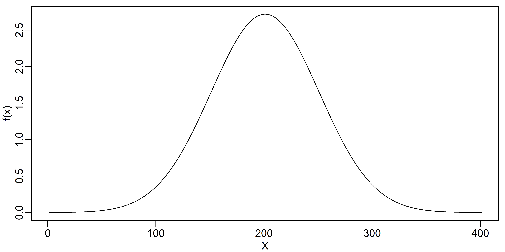

Normal
Introdução1
A distribuição normal é uma das mais importantes distribuições contínuas de probabilidade e pode ser escrita como
\[ f(x)= \frac{1}{\sqrt{2 \pi \sigma}} e^{- \frac{(x - \mu)^{2}}{2 \sigma^{2}}} , \tag{1}\]
em que \(\mu\) e \(\sigma\) são a média e a variância da distribuição. O objetivo deste artigo é apresentar uma demonstração dessa distribuição em forma de sino a partir da exponenciação de um polinômio de segundo grau, isto é,
\[ f(x)= exp \{ ax^{2} + bx + c \} , \tag{2}\]
em que \(a\), \(b\) e \(c\) são constantes. Por exemplo, podemos representar graficamente a exponenciação desse polinômio para \(a=-2\), \(b=0\) e \(c=1\), ou seja,

O gráfico apresentado na Figure 1 não tem área sob a curva igual a um, mas tem o formado de sino equivalente à curva normal.
Para que esta função tenha um máximo, faremos \(a<0\). Assim \(a=- \alpha\) com \(\alpha > 0\). As constantes \(b\), a qual move o pico central da distribuição ao longo de \(x\), e \(c\) são escolhidas a fim de que
\[ \int_{- \infty}^{+ \infty} f(x) \hspace{0.2cm} dx = 1 . \tag{3}\]
Desenvolvimento
Começaremos agora um trabalho algébrico. Assim
\[ f(x)= exp \{ -(\alpha x^{2} - bx) \} exp \{ {c} \} , \tag{4}\]
em que, completando quadrados na primeira exponencial da Equation 4, temos
\[\begin{equation*} \alpha x^{2} - bx = \left( \sqrt{ \alpha } x - \frac{b}{2 \sqrt{ \alpha }} \right)^{2} - \left(\frac{b}{2 \sqrt{ \alpha}}\right)^{2} . \end{equation*}\]Dessa forma
\[\begin{equation*} f(x)= exp \left\{ -\left( \sqrt{\alpha} x - \frac{b}{2 \sqrt{ \alpha }} \right)^{2} \right\} exp \left\{ c - \left( \frac{b}{2 \sqrt{ \alpha}} \right)^{2} \right\} , \end{equation*}\]e, como \(exp \left\{ c - \left( \frac{b}{2 \sqrt{ \alpha}} \right)^{2} \right\}\) é uma constante, faremos
\[\begin{equation*} \beta = exp \left\{ c - \left( \frac{b}{2 \sqrt{ \alpha}} \right)^{2} \right\} , \end{equation*}\]ficando com
\[\begin{equation*} f(x) \hspace{0.2cm} = \hspace{0.2cm} \beta \hspace{0.2cm} exp \left\{ -\left( \sqrt{\alpha} x - \frac{b}{2 \sqrt{ \alpha }} \right)^{2} \right\} . \end{equation*}\]Agora fazendo \(\theta= \left( \sqrt{\alpha}x -\frac{b}{2 \sqrt{ \alpha }} \right)^{2}\), temos
\[\begin{eqnarray*} \theta & = & \left( \sqrt{\alpha} x - \frac{b}{2 \sqrt{ \alpha }} \right)^{2}\nonumber\\ & = & \left( \frac{2 \alpha x - b}{2 \sqrt{ \alpha }} \right)^{2}\nonumber\\ & = & \frac{ \left( x - \frac{b}{ 2 \alpha} \right)^{2} }{ 4 \alpha } \end{eqnarray*}\]e com \(\mu = \frac{b}{2 \alpha}\) e \(\sigma^{2} = \frac{1}{2 \alpha}\) chegamos em
\[\begin{equation*} \theta = \frac{ \left( x - \mu \right)^{2} }{ 2 \sigma^{2} } \end{equation*}\]e assim ficamos com
\[\begin{equation*} f(x)\hspace{0.2cm}=\hspace{0.2cm} \beta \hspace{0.2cm} exp \left\{ - \frac{ \left( x - \mu \right)^{2} }{ 2 \sigma^{2} } \right\} . \end{equation*}\]Agora precisamos que nossa \(f(x)\) integrada nos intervalos de menos infinito a mais infinito seja igual a \(1\), conforme Equation 3, ou seja,
\[\begin{equation*} \int_{- \infty}^{+ \infty} f(x) \hspace{0.2cm} dx = 1 , \end{equation*}\]Vamos escrever \(I\) como
\[ I = \int_{- \infty}^{+ \infty} \beta \hspace{0.2cm} exp \left\{ - \frac{ \left( x - \mu \right)^{2} }{ 2 \sigma^{2} } \right\} \hspace{0.2cm} dx , \tag{5}\]
que deve ser igual a \(1\). Para resolvermos esta integral, faremos uma mudança de variável, ou seja,
\[ u \hspace{0.2cm} = \hspace{0.2cm} x \hspace{0.2cm} - \hspace{0.2cm} \mu \tag{6}\]
assim
\[ du \hspace{0.2cm} = \hspace{0.2cm} dx \hspace{0.2cm} , \tag{7}\]
ficando com
\[\begin{equation*} I = \beta \int_{- \infty}^{+ \infty} \hspace{0.2cm} e^{ - \frac{u^{2}}{ 2 \sigma^{2}} } \hspace{0.2cm} du \hspace{0.2cm} . \end{equation*}\]Como
\[\begin{equation*} \int_{- \infty}^{+ \infty} \hspace{0.2cm} e^{ - \gamma u^{2} } \hspace{0.2cm} du = \sqrt{ \frac{ \pi }{ \gamma } } \hspace{0.5cm} , \end{equation*}\](ver Section 3) temos
\[\begin{equation*} I \hspace{0.2cm} = \hspace{0.2cm} \beta \hspace{0.2cm} \sqrt{ 2 \sigma^{2} \pi } , \end{equation*}\]e como \(I\) deve ser igual a \(1\)
\[\begin{equation*} \beta \hspace{0.2cm} \sqrt{ 2 \sigma^{2} \pi } \hspace{0.2cm} = \hspace{0.2cm} 1 , \end{equation*}\]de onde
\[\begin{equation*} \beta \hspace{0.2cm} = \hspace{0.2cm} \frac{1}{ \sqrt{ 2 \sigma^{2} \pi }} \hspace{0.2cm} . \end{equation*}\]Dessa forma, temos abaixo a função densidade de probabilidade (\(fdp\)), Equation 1, a qual queríamos demonstrar, ou seja,
\[\begin{equation*} f(x)= \frac{1}{\sqrt{2 \pi \sigma}} e^{- \frac{(x - \mu)^{2}}{2 \sigma^{2}}}\hspace{0.2cm} . \end{equation*}\]Agora, resta ainda calcular a esperança e a variância desta \(fdp\), a fim de mostrar que
\[ \mu \hspace{0.2cm} = \hspace{0.2cm} E(X) \hspace{0.2cm} = \hspace{0.2cm} \int_{- \infty}^{+ \infty} \hspace{0.2cm} x \hspace{0.2cm} f(x) \hspace{0.2cm} dx \hspace{0.2cm} \tag{8}\]
e que
\[ \sigma^{2} \hspace{0.2cm} = \hspace{0.2cm} Var(X) \hspace{0.2cm} = \hspace{0.2cm} E [ ( X - \mu )^{2} ] \hspace{0.2cm} = \hspace{0.2cm} \int_{- \infty}^{+ \infty} \hspace{0.2cm} ( X - \mu )^{2} \hspace{0.2cm} f(x) \hspace{0.2cm} dx \hspace{0.2cm}. \tag{9}\]
Começando, então, pela definição da esperança matemática \(E(X)\) para a nossa \(fdp\) temos
\[\begin{eqnarray*} E(X) & = & \int_{- \infty}^{+ \infty} \hspace{0.2cm} x \hspace{0.2cm} f(x) \hspace{0.2cm} dx\nonumber\\ & = & \int_{- \infty}^{+ \infty} \hspace{0.2cm} \frac{x}{\sqrt{2 \pi \sigma^{2}}} e^{- \frac{(x - \mu)^{2}}{2 \sigma^{2}}}\hspace{0.2cm} du\nonumber\\ & = & \frac{1}{\sqrt{2 \pi \sigma^{2}}} \int_{- \infty}^{+ \infty} \hspace{0.2cm} x e^{- \frac{(x - \mu)^{2}}{2 \sigma^{2}}} \hspace{0.2cm} du\hspace{0.2cm} . \end{eqnarray*}\]Para resolvermos esta integral, faremos uma mudança de variável para \(x\), conforme Equation 6 e Equation 7, ficando com
\[\begin{eqnarray*} E(X) & = & \frac{1}{\sqrt{2 \pi \sigma^{2}}} \int_{- \infty}^{+ \infty} \hspace{0.2cm}(u + \mu) \hspace{0.2cm} e^{- \frac{(u)^{2}}{2 \sigma^{2}}}\hspace{0.2cm} \hspace{0.2cm} du \hspace{0.2cm}\nonumber\\ & = & \frac{1}{\sqrt{2 \pi \sigma^{2}}} \left[ \int_{- \infty}^{+ \infty} \hspace{0.1cm} u \hspace{0.1cm} e^{- \frac{(u)^{2}}{2 \sigma^{2}}}\hspace{0.1cm} \hspace{0.1cm} du \hspace{0.1cm} + \hspace{0.1cm} \int_{- \infty}^{+ \infty} \hspace{0.1cm} \mu \hspace{0.1cm} e^{- \frac{(u)^{2}}{2 \sigma^{2}}}\hspace{0.1cm} \hspace{0.1cm} du \right]\nonumber\\ \end{eqnarray*}\]em que a primeira integral do lado direito da igualdade acima é igual a zero (ver Section 4).
Então,
\[\begin{equation*} E(X) \hspace{0.2cm} = \hspace{0.2cm}\frac{\mu}{\sqrt{2 \pi \sigma^{2}}} \int_{- \infty}^{+ \infty} \hspace{0.2cm} e^{- \frac{(u)^{2}}{2 \sigma^{2}}} \hspace{0.2cm} du\hspace{0.2cm} \hspace{0.2cm}. \end{equation*}\]conforme Section 3. Dessa forma, temos que
\[\begin{equation*} E(X) \hspace{0.2cm} = \hspace{0.2cm}\frac{\mu}{\sqrt{2 \pi \sigma^{2}}} \hspace{0.2cm} \sqrt{2 \pi \sigma^{2}} \hspace{0.2cm} = \hspace{0.2cm} \mu \hspace{0.2cm}, \end{equation*}\]que é a média \(\mu\), ou seja, vemos que a esperança da \(fdp\) estudada é
\[ E(X) \hspace{0.2cm} = \hspace{0.2cm} \mu \hspace{0.2cm}, \tag{10}\]
conforme queríamos demonstrar.
Continuemos, agora, com o cálculo da variância \(Var (X)\) da nossa \(fdp\). Pela definição temos que \[\begin{eqnarray*} Var(X) & = & E [ ( X - \mu )^{2} ]\nonumber\\ & = & \int_{- \infty}^{+ \infty} \hspace{0.2cm} ( x - \mu )^{2} \hspace{0.2cm} f(x) \hspace{0.2cm} dx \hspace{0.2cm}\nonumber\\ & = & \frac{1}{\sqrt{2 \pi \sigma^{2}}} \int_{- \infty}^{+ \infty} \hspace{0.2cm}(x - \mu)^{2} \hspace{0.2cm} e^{- \frac{(x - \mu)^{2}}{2 \sigma^{2}}}\hspace{0.2cm} \hspace{0.2cm} dx \hspace{0.2cm} , \end{eqnarray*}\]
e fazendo a substituição da variável \(x\) conforme Equation 6 e Equation 7, ficamos com
\[\begin{equation*} Var(X) \hspace{0.2cm} = \hspace{0.2cm} \frac{1}{\sqrt{2 \pi \sigma^{2}}} \int_{- \infty}^{+ \infty} \hspace{0.2cm}(u)^{2} \hspace{0.2cm} e^{- \frac{(u)^{2}}{2 \sigma^{2}}}\hspace{0.2cm} \hspace{0.2cm} du \hspace{0.2cm}, \end{equation*}\]que pode ser resolvida por partes, conforme Section 5, para tornar-se
\[ Var(X) \hspace{0.2cm} = \hspace{0.2cm} \sigma^{2} \hspace{0.2cm}, \tag{11}\]
que é a variância da \(fdp\) estudada, conforme queríamos demonstar.
Integral A
Queremos mostrar que a integral
\[ I_{A} = \int_{- \infty}^{+ \infty} \hspace{0.2cm} e^{- \lambda x^{2}}\hspace{0.2cm} \hspace{0.2cm} dx \hspace{0.2cm}, \tag{12}\]
que é conhecida como gaussiana, é igual a \(\sqrt{\frac{\pi}{\lambda}}\). Esta integral também pode ser escrita como
\[\begin{equation*} I_{A} = \int_{- \infty}^{+ \infty} \hspace{0.2cm} e^{- \lambda y^{2}}\hspace{0.2cm} \hspace{0.2cm} dy \hspace{0.2cm}, \end{equation*}\]em que a variável \(x\) foi substituida por \(y\). Isto é possível, pois \(x\) e \(y\) são variáveis mudas, ou seja, o valor de \(I_{A}\) não depende destas variáveis. Assim, podemos fazer \(I_{A}^{2}\) para termos
\[\begin{eqnarray*} I_{A}^{2} & = & \int_{- \infty}^{+ \infty} \hspace{0.2cm} e^{- \lambda x^{2}}\hspace{0.2cm} \hspace{0.2cm} dx \hspace{0.3cm} \int_{- \infty}^{+ \infty} \hspace{0.2cm} e^{- \lambda y^{2}}\hspace{0.2cm} \hspace{0.2cm} dy \hspace{0.2cm}\\ &=& \int_{- \infty}^{+ \infty} \hspace{0.2cm} \int_{- \infty}^{+ \infty} \hspace{0.2cm} e^{- \lambda (x^{2} + y^{2})}\hspace{0.2cm}dx \hspace{0.2cm} dy \hspace{0.2cm} . \end{eqnarray*}\]Agora, é preciso fazermos uma transformação de coordenadas, indo do sistema de coordenadas retangulares para o sistema de coordenadas polares. Um ponto \(P\) do plano é representado por \(P(x, y)\) num sistema de coordenadas retangulares ou por \(P(r, \theta)\) num sistema de coordenadas polares. Quando conhecemos \(x\) e \(y\) podemos escrever \(r\) como \(r^{2}=x^{2} +y^{2}\) e fazermos o elemento de área \(da = dx dy\) ser \(da = r dr d\theta\). Desta forma, quando os limites de integração \(x\) e \(y\) variarem de \(- \infty\) a \(+ \infty\) temos que \(r\) deve ir de \(0\) a \(+ \infty\) e \(\theta\) de \(0\) a \(2 \pi\). Assim, a integral
\[\begin{equation*} I_{A}^{2} = \int_{- \infty}^{+ \infty} \hspace{0.2cm} \int_{- \infty}^{+ \infty} \hspace{0.2cm} e^{- \lambda (x^{2} + y^{2})}\hspace{0.2cm}dx \hspace{0.2cm} dy \hspace{0.2cm} \end{equation*}\]aqui, representada no sistema de coordenadas retangulares, é transformada em
\[\begin{equation*} I_{A}^{2} = \int_{0}^{2 \pi} \hspace{0.2cm} \int_{0}^{+ \infty} \hspace{0.2cm} r e^{- \lambda r^{2}}\hspace{0.2cm}dr \hspace{0.2cm} d\theta \hspace{0.2cm} \end{equation*}\]que é sua representação em coordenadas polares. Então
\[\begin{eqnarray*} I_{A}^{2} & = & \int_{0}^{2 \pi} d\theta \hspace{0.2cm} \int_{0}^{+ \infty} \hspace{0.2cm} r e^{- \lambda r^{2}}\hspace{0.2cm}dr \hspace{0.2cm}\\ & = & 2 \pi \hspace{0.2cm} \int_{0}^{+ \infty} \hspace{0.2cm} r e^{- \lambda r^{2}}\hspace{0.2cm}dr \hspace{0.2cm} . \end{eqnarray*}\]Para resolvermos a integral em \(r\) fazemos \(u = r^{2}\) e \(du = 2 r dr\). Assim
\[\begin{eqnarray*} I_{A}^{2} & = & 2 \pi \hspace{0.2cm} \int_{0}^{+ \infty} \hspace{0.2cm} \frac{1}{2}\hspace{0.2cm} e^{- \lambda u}\hspace{0.2cm}du \hspace{0.2cm}\\ & = & \left[ - \frac{\pi}{\lambda} \hspace{0.2cm} e^{- \lambda u}\hspace{0.2cm} \right]_{0}^{+ \infty}\\ & = & - \frac{\pi}{\lambda} \left( \frac{1}{e^{+ \infty}} - \frac{1}{e^{\lambda (0)}} \right)\\ & = & - \frac{\pi}{\lambda} \left( 0 - 1 \right)\\ & = & \frac{\pi}{\lambda} \end{eqnarray*}\]e finalmente, aplicando a raiz quadrada em ambos os lados da igualdade,
\[ I_{A} = \sqrt{\frac{\pi}{\lambda}} \tag{13}\]
conforme queríamos demonstrar.
Integral B
Outro resultado que queremos demonstrar é
\[ I_{B} = \int_{- \infty}^{+ \infty} \hspace{0.2cm} x \hspace{0.2cm} e^{- \beta x^{2}}\hspace{0.2cm} \hspace{0.2cm} dx = 0 \hspace{0.2cm}, \tag{14}\]
Para isto, faremos a substituição \(u = \beta x^{2}\) e \(du = 2 \beta x dx\). Assim
\[\begin{eqnarray*} I_{B} & = & \int_{- \infty}^{+ \infty} \hspace{0.2cm} \frac{1}{2 \beta} \hspace{0.2cm} e^{-u}\hspace{0.2cm} \hspace{0.2cm} du\\ & = & \frac{1}{2 \beta} \int_{- \infty}^{+ \infty} \hspace{0.2cm} e^{-u}\hspace{0.2cm} \hspace{0.2cm} du\\ & = & \frac{1}{2 \beta} \left[ - e^{-u} \right]_{- \infty}^{+ \infty}\\ & = & \frac{1}{2 \beta} \left( - \frac{1}{e^{+ \infty}} + \frac{1}{e^{- \infty}} \right)\\ & = & \frac{1}{2 \beta} \left( -0 + 0 \right)\\ & = & 0 \end{eqnarray*}\]conforme queríamos demonstrar.
Integral C
Supondo
\[ I_{C} \hspace{0.2cm} = \hspace{0.2cm} \frac{1}{\sqrt{2 \pi \sigma^{2}}} \int_{- \infty}^{+ \infty} \hspace{0.2cm}(z)^{2} \hspace{0.2cm} e^{- \frac{(z)^{2}}{2 \sigma^{2}}}\hspace{0.2cm} \hspace{0.2cm} dz \hspace{0.2cm}, \tag{15}\]
queremos demonstrar que \(I_{C} = \sigma^{2}\). Resolveremos esta integral por partes, ou seja, usando a definição
\[ \int u dv = uv - \int v du \tag{16}\]
e fazendo
\[\begin{equation*} I_{C} \hspace{0.2cm} = \hspace{0.2cm} \frac{1}{\sqrt{2 \pi \sigma^{2}}} \int_{- \infty}^{+ \infty} \hspace{0.2cm} \underbrace{z}_{u} \underbrace{ z \hspace{0.2cm} e^{- \frac{(z)^{2}}{2 \sigma^{2}}}\hspace{0.2cm} \hspace{0.2cm} dz}_{dv} \hspace{0.2cm}, \end{equation*}\]temos, com isso, que \(u=z\), \(du=dz\), \(dv= z \hspace{0.2cm} e^{- \frac{(z)^{2}}{2 \sigma^{2}}} dz\) e então \(v= \int z e^{-\frac{z^{2}}{2 \sigma^{2}}} dz\). Esta última integral, para encontrarmos \(v\), pode ser resolvida com \(t=\frac{z^{2}}{2 \sigma^{2}}\) e \(dt= \frac{z}{\sigma^{2}} dz\). Assim, fazendo estas substituições,
\[\begin{eqnarray*} v & = & \sigma^{2} \int e^{-t} dt\\ & = & - \sigma^{2} e^{-t} , \end{eqnarray*}\]e como fizemos \(t=\frac{z^{2}}{2 \sigma^{2}}\), \(v\) finalmente fica \(v= - \sigma^{2} e^{-\frac{z^{2}}{2 \sigma^{2}}}\). Com isto,
\[\begin{eqnarray*} I_{C} & = & \frac{1}{\sqrt{2 \pi \sigma^{2}}} \left[ - z \sigma^{2} e^{- \frac{z^{2}}{2 \sigma^{2}}} \right]_{-\infty}^{+\infty} - \int_{- \infty}^{+ \infty} \left( - \sigma^{2} e^{-\frac{z^{2}}{2 \sigma^{2}}} \right) dz\\ & = & \frac{\sigma^{2}}{\sqrt{2 \pi \sigma^{2}}} \int_{- \infty}^{+ \infty} e^{-\frac{z^{2}}{2 \sigma^{2}}} \hspace{0.2cm} dz\\ & = & \frac{\sigma^{2}}{\sqrt{2 \pi \sigma^{2}}} \sqrt{2 \pi \sigma^{2}}\\ & = & \sigma^{2} . \end{eqnarray*}\]Footnotes
Caso encontre erros, queira fazer comentários, ou trocar uma ideia sobre o artigo, por favor, me escreva: omarcnpereiraead@gmail.com↩︎